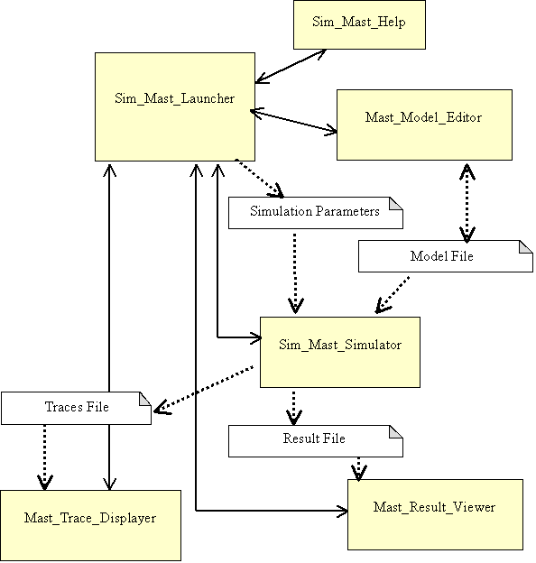
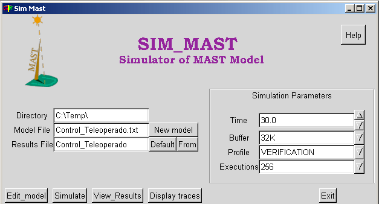

<!DOCTYPE HTML PUBLIC "-//W3C//DTD HTML 4.0 Transitional//EN"><html><head><!-- saved from url=(0030)http://mast.unican.es/simmast/ --><title>SIM-MAST</title>
  

  

  

  

  

  
  
  
  
  <meta content="text/html; charset=iso-8859-1" http-equiv="Content-Type">


  
  
  
  
  <meta content="Patricia Lopez." name="Author">


  
  
  
  
  <meta content="MSHTML 5.00.3315.2870" name="GENERATOR">


  
  
  
  
  <meta content="Simulator for real-time systems modeled by MAST" name="description">


  
  
  
  
  <meta content="real-time, schedulability analysis, real-time modeling, 
uml, object-oriented, real-time view, real time, real-time tools, distributed systems, RMA, 
schedulability analysis tool, umlmast, mast, uml-mast, uml_mast, tiempo real, 
orientacion a objetos, analisis de planificabilidad, herramientas CASE UML" name="keywords">


  
  
  
  
  <meta content="Copyright 1999-2003 Universidad de Cantabria" name="copyright"></head><body alink="#ff0000" bgcolor="#ffffff" link="#0000ee" text="#000000" vlink="#551a8b">&nbsp; 
<table width="100%">


  <tbody>
  <tr>
    <td> 
</td>
    <td align="center">
      <dl><h1><font face="Times New Roman,Times"><font color="#3333ff"><font size="+4">SIM-MAST</font></font></font></h1><h1><font face="Comic Sans MS"><font color="#993366">Simulator of MAST Models</font></font></h1></dl></td></tr></tbody>
</table>


<h2><font face="Comic Sans MS"><font color="#993366">Table of 
Contents</font></font></h2>


<ul>


  <li><font face="Comic Sans MS"><font color="#009900"><a href="http://mast.unican.es/simmast#intro">Introduction&nbsp;</a></font></font></li><li><font face="Comic Sans MS"><font color="#009900"><a href="http://mast.unican.es/simmast#Environment">Sim-Mast Environment</a></font></font></li><li><font face="Comic Sans MS"><font color="#009900"><a href="http://mast.unican.es/simmast#UserInterface">User Interface</a></font></font></li>
  <li><font face="Comic Sans MS"><font color="#009900"><a href="http://mast.unican.es/simmast#Profiles">Profiles</a></font></font></li>
  

<li><font face="Comic Sans MS"><font color="#009900"><a href="http://mast.unican.es/simmast#docs">Documents</a></font></font> 
  </li><li><font face="Comic Sans MS"><font color="#009900"><a href="http://mast.unican.es/simmast#downloading">Downloading</a></font></font> 

  </li><li><font face="Comic Sans MS"><font color="#009900"><a href="http://mast.unican.es/">Mast page</a></font></font> 
  </li>
</ul>


<h2><a name="intro"></a><font face="Comic Sans MS"><font color="#993366">Introduction</font></font></h2>


<font face="Arial,Helvetica">SIM_MAST is a tool for simulating th</font><font face="Arial,Helvetica">e <font face="Helvetica, Arial, sans-serif">temporal </font>behavior of </font><font face="Arial,Helvetica">real-time 
systems that have been previously modeled with MAST. The tool takes the MAST 
Model file as input, and after set some parameters, executes the simulation. 
This execution generates different information &nbsp;about the system, i.e.,
the fulfillment of the timing requirements set in the model, the utilization
of passive and active resources, the worst, average and best response times and execution traces.</font> 
<p><font face="Arial,Helvetica">SIM_MAST has been developed with the following objectives:<br>
</font></p>


<ul>


  <li><font face="Helvetica, Arial, sans-serif">Estimating the behavior of the modeled system when there is no alternative analytic analysis tool.</font></li>
  <li><font face="Helvetica, Arial, sans-serif">Evaluating the correctness and efficiency of other design and analysis methods and tools.</font></li>
  <li><font face="Helvetica, Arial, sans-serif">Help in identifying bugs and bottlenech points in different stages of the developing process.</font><font face="Helvetica, Arial, sans-serif">&nbsp;</font></li>
</ul>


<font face="Arial,Helvetica">SIM-MAST evolves from and relies on the Modeling 
and Analysis Suite for Real-Time Applications (see the <a href="http://mast.unican.es/">MAST page</a> for details) and takes advantage of 
its modeling capabilities, </font><font face="Arial,Helvetica">but it is also 
subject to the restrictions under which it can be applied.</font> <br>


<br>


<h2><a name="Environment"></a><font><font><font><font face="Comic Sans MS"><font color="#993366">Sim-Mast_Environment</font></font></font></font></font></h2>


<font face="Helvetica, Arial, sans-serif"><span style="vertical-align: baseline;">&nbsp;The tool is provided as a set of four executable programs:<o:p></o:p></span></font><font face="Helvetica, Arial, sans-serif"><b><br>
</b></font>
<ul>


  <li><font face="Helvetica, Arial, sans-serif"><b>Sim_Mast_Launcher:</b> 
An easy GUI application that allows to invoke the simulator, by choosing
the execution parameters that are to be used and the input file that can
have two different formats: a concise special-purpose format and a XML-based
format.</font></li>
  <li><font face="Helvetica, Arial, sans-serif"><span style="vertical-align: baseline;"></span><span style="vertical-align: baseline;"><span style="font-family: &quot;Times New Roman&quot;; font-style: normal; font-variant: normal; font-weight: normal; font-size: 7pt; line-height: normal; font-stretch: normal; font-size-adjust: none;"></span></span><b>Sim_Mast_Simulator:</b> The program that executes the simulation of the model.</font></li>
  <li><font face="Helvetica, Arial, sans-serif"><o:p></o:p><span style="vertical-align: baseline;"></span><b>Mast_Results_Viewer:</b>&nbsp; 
  GUI graphic tool for viewing the simulation results.</font></li>
  <li><font face="Helvetica, Arial, sans-serif"><b>Mast_Traces_Displayer:</b>&nbsp; 
  GUI graphic tool for viewing the simulation traces.</font></li>
</ul>


<p align="center"></p>


<div align="center">
</div>


<div align="center">&nbsp;
<br>
<br>
<h2 align="left"><font face="Comic Sans MS"><font color="#993366"><a name="UserInterface"></a>User Interface</font></font></h2>
<div align="left"><font face="Helvetica, Arial, sans-serif">The<b>&nbsp; Sim_Mast_Launcher</b> module is a GUI 
program that allows the selection of&nbsp; the Mast model that is going
to be analyzed, the assignment of the simulation parameters and then, the invocation of the simulation tools.
                

                

                

                

                

                
<span style="vertical-align: baseline;">   The user interface is based on a graphic window, which </span><span style="vertical-align: baseline;"></span> contains the following controls for defining the elements needed for the simulation:</font><br>
<br>
<dl><dd><font face="Helvetica, Arial, sans-serif"><b>Directory</b>: 
Text box that defines the directory used to create the Model file's pathname, which is also used to place the output files.</font></dd></dl>
<dl><dd><font face="Helvetica, Arial, sans-serif"><b>Model
    File</b>:
 Text box that defines the name of the Mast Model file used as input for
the simulator. The complete input file pathname is the concatenation of the
Directory and Model File entries in the way: &lt;Directory&gt;+&lt;Model
 File&gt;. For the example in the next figure, it would be: &#8220;C:\Temp\Telerobot.txt&#8221;.</font></dd></dl>
<dl><dd><font face="Helvetica, Arial, sans-serif"><b>Results
    File</b>:
 Text box that defines the name of the output files generated by the simulator. 
The complete output files pathname is the concatenation of the Directory and
Results File entries with the appropriate suffix, according to the kind of
results, in the way:&nbsp;&lt; Directory&gt;+&lt;Results    File&gt;+{&#8221;.res&#8221;|&#8221;.log.xml&#8221;|&#8221;.bak&#8221;}. 
When the extension of the model file is &acute;xml&acute;, the output files
pathname is: &lt;Directory&gt;+&lt;ResultsFile&gt;+{&#8221;.res&#8221;|&#8221;.log&#8221;|&#8221;.bak&#8221;}+".xml".
The suffix ".res" is used for the simulation results file, ".log.xml" is used 
for the traces file and the ".bak" file keeps a copy of the simulated model. 
For the example in the next figure, the results file name would be: "C:\Temp\Telerobot_1.res".&nbsp;</font></dd><dd><font face="Helvetica, Arial, sans-serif">&nbsp;</font></dd><dd>  
   <font face="Helvetica, Arial, sans-serif"><o:p></o:p></font></dd><dd><font face="Helvetica, Arial, sans-serif"><b>Time</b>: 
Text box that defines the maximum simulation time, at which the simulation
execution finishes. In some profiles it represents the simulation
time, in others it is a timeout used to terminate the simulation when the ordinary finalizing criterion is not satisfied.
  </font></dd></dl>


  
  
  
  </div>
<div align="left">
  </div>
<p class="MsoBodyText" align="left">   <font face="Helvetica, Arial, sans-serif"><o:p></o:p></font></p>
<div align="left">
  
<dl><dd><font face="Helvetica, Arial, sans-serif"><b>Profile</b>:<span style=""> </span>Label that specifies the results profile used in the simulation. The possible values are:<span lang="EN-US" style="">   &nbsp; &nbsp; &nbsp;
 &nbsp; &nbsp; &nbsp; </span></font></dd><dd><font face="Helvetica, Arial, sans-serif"><span lang="EN-US" style=""></span><span lang="EN-US" style="">
  SCHEDULABILITY, VERIFICATION, EXHAUSTIVE.</span></font></dd></dl>
<dl><dd><font face="Helvetica, Arial, sans-serif"><b>Buffer</b>: It defines the buffer length, in bytes, of the logger used. In the case that the buffer is managed in a bounded or
circular way, it is the buffer size, though if it is unbounded, it
represents the size of the blocks used to storage them. It can take
the values:    512, 2K, 8K y 32K.</font></dd></dl>

  
  
  
  </div>
<div align="left">
<dl><dd>
    <font face="Helvetica, Arial, sans-serif"><b>Executions:</b> It is used as a finalizing criterion in some profiles, the
execution finishes when every transaction has been simulated at
least the number of times specified.  <br>
    </font>
  </dd></dl>
</div>
<div align="left">
  </div>
<p class="MsoBodyText" align="left">   <font face="Helvetica, Arial, sans-serif"><o:p></o:p></font></p>
<div align="left">
  
<dl><dd><font face="Helvetica, Arial, sans-serif"><b>Model</b>: Button that launches a dialog box that helps to select the Directory and Model file to be used.</font></dd><dd><font face="Helvetica, Arial, sans-serif"><br>
    </font></dd><dd>   <font face="Helvetica, Arial, sans-serif"><o:p></o:p><b>Default</b>:
  Button that set the default output root file name, this is the model file
name followed by an underscore and a number, that is: &lt;Model
File&gt;+&#8217;_&#8217;+&lt;n&gt;&#8217;. The number increases to avoid loosing previous results.</font></dd><dd><br>
  </dd><dd>   <font face="Helvetica, Arial, sans-serif"><o:p></o:p><b>From</b>:
  Button that establishes as Model File the ".bak"&nbsp; file associated
to the file in the Results File entry. This button is disabled when a results
file name is established and the corresponding ".bak" file does not exist. 
  </font></dd></dl>
</div>
<p class="MsoBodyText" style="margin-left: 14.2pt; text-indent: -14.2pt;" align="left"><font face="Helvetica, Arial, sans-serif"><span style="">  </span></font></p>
<div align="left">
  </div>
<div align="left">
  </div>
<p class="MsoBodyText" style="margin-left: 14.2pt;" align="left">  
   <font face="Helvetica, Arial, sans-serif"><o:p></o:p></font></p>
<div align="left">
  
<dl><dd><font face="Helvetica, Arial, sans-serif"><b>Edit
 model</b>: 
Button that launches the model file editor (this program is under development).
This editor handles model files with the extensions {`.mdl&#8217;|&#8217;.bak&#8217;| &#8217;.txt&#8217;}, 
and always saves them with the &#8217;.mdl&#8217; extension.   </font></dd></dl>
</div>
<p class="MsoBodyText" style="margin-left: 14.2pt; text-indent: -14.2pt;" align="left"><font face="Helvetica, Arial, sans-serif"><span style="">  </span></font></p>
<div align="left">
  
<dl><dd><font face="Helvetica, Arial, sans-serif"><o:p></o:p><b> Execute</b>: Button that executes the Model File simulation. It is enabled only if the file extension is &acute;.xml` or &acute;.txt`.</font></dd><dd><font face="Helvetica, Arial, sans-serif"><br>
    </font></dd><dd><font face="Helvetica, Arial, sans-serif"><o:p></o:p><b>View Results</b>: Button that launches the results viewer.It is enabled only if the results file with &acute;.res&acute; extension exists.</font></dd></dl>
<dl><dd><font face="Helvetica, Arial, sans-serif"><b> Display Traces</b>: Button that launches the traces viewer. It is enabled only if the results file with &#8217;.log&#8217; extension exists.</font></dd><dd><font face="Helvetica, Arial, sans-serif"><br>
    </font></dd><dd>  
   <font face="Helvetica, Arial, sans-serif"><o:p></o:p></font></dd><dd><font face="Helvetica, Arial, sans-serif"><b>Exit</b>: Button that finishes the program.<span style="">  </span><b><o:p></o:p></b></font>
  </dd></dl>


  
  
  </div>
<div align="left">
  </div>
<p class="MsoBodyText" align="left"><font face="Helvetica, Arial, sans-serif"><b>   <o:p></o:p></b></font></p>
<div align="left">
  
<dl><dd><font face="Helvetica, Arial, sans-serif"><b>Help</b>: Button that launches an html browser with a help page showing information about the use of this program (this page).</font></dd></dl>
<div align="center">
<br>
<br>
<div align="left">
<h2><font face="Comic Sans MS"><font color="#993366"><a name="Profiles"></a>Profiles</font></font></h2>
<font face="Helvetica, Arial, sans-serif">A profile establishes
 the objective of the model simulation. It defines:<br>
</font>

<blockquote><font face="Helvetica, Arial, sans-serif">- The statistical magnitudes that are to be evaluated.<br>

- The logging messages and traces that are to be generated.<br>

- The buffer managing mode.<br>

- The criterion for ending the simulation.
 
  
  </font></blockquote>


<p class="MsoBodyText"><font face="Helvetica, Arial, sans-serif"><span style="">  </span></font></p>

<p>
                

                
<font face="Helvetica, Arial, sans-serif"><b>   </b><span style="vertical-align: baseline;"><small><b>SCHEDULABILITY_PROFILE</b></small>:
It generates information equivalent to that generated
by the schedulability analysis tool.</span></font><font face="Helvetica, Arial, sans-serif"><br>
</font></p>
<p><font face="Helvetica, Arial, sans-serif">Monitoring:</font></p>
<p><font face="Helvetica, Arial, sans-serif">
</font></p>

<ul>
  <li><font face="Helvetica, Arial, sans-serif">Events that has Timing Requirements associated and events that are the output of a segment.<o:p></o:p>&nbsp;</font></li>

  <li><font face="Helvetica, Arial, sans-serif">Events which represent the end of transactions.<o:p></o:p>
  
  <span style="font-family: &quot;Courier New&quot;; vertical-align: baseline;"></span></font></li>
  <li><font face="Helvetica, Arial, sans-serif">The utilization of resources.</font></li>

</ul>&nbsp; <font face="Helvetica, Arial, sans-serif">Logging:<br>
</font>
<ul>
  <li><font face="Helvetica, Arial, sans-serif">Messages that are generated when a Timing Requirement is not fulfilled.</font></li>
</ul>
<font face="Helvetica, Arial, sans-serif">&nbsp;Buffer Managing:<br>
</font>
<ul>
  <li>BOUNDED <font face="Helvetica, Arial, sans-serif">mode.</font></li>
</ul>
<font face="Helvetica, Arial, sans-serif">&nbsp;Ending criterion:</font>
  <font face="Helvetica, Arial, sans-serif"><br>
</font>
<ul>
  <li><font face="Helvetica, Arial, sans-serif">It ends when the last events of every transaction have been reached at least a minimum number of timer, or by timeout</font>, <font face="Helvetica, Arial, sans-serif">when the maximum simulation time is elapsed.</font>&nbsp;</li>
</ul>
<font face="Helvetica, Arial, sans-serif"><small><b>VERIFICATION_PROFILE</b></small>: Its objective is searching for situations in which the timing requirements are not fulfilled.</font><font face="Helvetica, Arial, sans-serif"><br>
</font>
<p><font face="Helvetica, Arial, sans-serif">Monitoring:</font></p>
<p><font face="Helvetica, Arial, sans-serif">
</font></p>

<ul>
  <li><font face="Helvetica, Arial, sans-serif">Events that has Timing <font face="Helvetica, Arial, sans-serif">Requirements associated and events that are the output of a segment.&nbsp;</font></font></li>
  <li><font face="Helvetica, Arial, sans-serif"><font face="Helvetica, Arial, sans-serif">The utilization of resources.<br>
    </font></font></li>
</ul>
<p class="MsoNormal" style="margin-left: 21.3pt; text-align: justify; text-indent: -14.2pt;"><font face="Helvetica, Arial, sans-serif"><o:p></o:p></font></p>


                          
 
<blockquote><font face="Helvetica, Arial, sans-serif">
  <span style="font-family: &quot;Courier New&quot;; vertical-align: baseline;"></span><o:p></o:p></font>
  </blockquote>


    
                
 <font face="Helvetica, Arial, sans-serif"><span style="vertical-align: baseline;"><span style="font-family: &quot;Times New Roman&quot;; font-style: normal; font-variant: normal; font-weight: normal; font-size: 7pt; line-height: normal; font-stretch: normal; font-size-adjust: none;"></span></span>Logging:<br>
</font>
<ul>
  <li><font face="Helvetica, Arial, sans-serif">Messages that are generated when a Timing Requirement is not fulfilled.</font></li>
  <li><font face="Helvetica, Arial, sans-serif">Messages that are generated each time a relevant event (Flow_Event) occurs.</font></li>
</ul>
<font face="Helvetica, Arial, sans-serif">Buffer Managing:<br>
</font>
<ul>
  <li>CIRCULAR <font face="Helvetica, Arial, sans-serif">&nbsp;mode.</font></li>
</ul>
<p class="MsoNormal" style="margin-left: 1cm; text-align: justify; text-indent: -18pt;">
</p>


<p class="MsoNormal" style="margin-left: 1cm; text-align: justify; text-indent: -18pt;"><font face="Helvetica, Arial, sans-serif"><o:p></o:p></font></p>


                          
 
<blockquote><font face="Helvetica, Arial, sans-serif"><span style="font-family: &quot;Courier New&quot;; vertical-align: baseline;"><span style="font-family: &quot;Times New Roman&quot;; font-style: normal; font-variant: normal; font-weight: normal; font-size: 7pt; line-height: normal; font-stretch: normal; font-size-adjust: none;"></span></span><o:p></o:p></font><font face="Helvetica, Arial, sans-serif"><span lang="EN-US" style="vertical-align: baseline;"><span style="font-family: &quot;Times New Roman&quot;; font-style: normal; font-variant: normal; font-weight: normal; font-size: 7pt; line-height: normal; font-stretch: normal; font-size-adjust: none;"></span></span><span lang="EN-US" style=""></span></font></blockquote>

                
<font face="Helvetica, Arial, sans-serif"><span lang="EN-US" style=""><o:p></o:p></span>Finalizing criterion:<br>
</font>
<ul>
  <li><font face="Helvetica, Arial, sans-serif"><span style="font-family: &quot;Courier New&quot;; vertical-align: baseline;"><span style="font-family: &quot;Times New Roman&quot;; font-style: normal; font-variant: normal; font-weight: normal; font-size: 7pt; line-height: normal; font-stretch: normal; font-size-adjust: none;"></span></span><span style="font-family: &quot;Courier New&quot;; vertical-align: baseline;"><span style="font-family: &quot;Times New Roman&quot;; font-style: normal; font-variant: normal; font-weight: normal; font-size: 7pt; line-height: normal; font-stretch: normal; font-size-adjust: none;"></span></span><span style="font-family: &quot;Courier New&quot;; vertical-align: baseline;"><span style="font-family: &quot;Times New Roman&quot;; font-style: normal; font-variant: normal; font-weight: normal; font-size: 7pt; line-height: normal; font-stretch: normal; font-size-adjust: none;"> </span></span>It ends when
the terminal events of every transaction have been reached at least a minimum
number of times, or by timeout, when the maximum simulation time is elapsed , or when a Timing Requirement is not satisfied.</font></li>
</ul><font face="Helvetica, Arial, sans-serif"><b><small>EXHAUSTIVE_PROFILE</small></b><small>:</small> &nbsp;It generates an exhaustive information about the simulation's execution.<span style=""></span></font> <br>
<p><font face="Helvetica, Arial, sans-serif"><span style="vertical-align: baseline;"><o:p></o:p></span></font><font face="Helvetica, Arial, sans-serif"><span style="vertical-align: baseline;"></span>Monitoring:</font></p>
<p><font face="Helvetica, Arial, sans-serif">
</font></p>

<ul>
<li><font face="Helvetica, Arial, sans-serif">Events that has Timing <font face="Helvetica, Arial, sans-serif">Requirements associated and events that are the output of a segment.&nbsp;</font></font></li><li><font face="Helvetica, Arial, sans-serif"><font face="Helvetica, Arial, sans-serif">The utilization of resources.<br>
    </font></font></li>
</ul>

<p class="MsoNormal" style="margin-left: 21.3pt; text-align: justify; text-indent: -14.2pt;"><font face="Helvetica, Arial, sans-serif"><o:p></o:p></font></p>


                          
 
<blockquote><font face="Helvetica, Arial, sans-serif">
  <span style="font-family: &quot;Courier New&quot;; vertical-align: baseline;"></span><o:p></o:p></font>
  </blockquote>


    
                
 <font face="Helvetica, Arial, sans-serif"><span style="vertical-align: baseline;"><span style="font-family: &quot;Times New Roman&quot;; font-style: normal; font-variant: normal; font-weight: normal; font-size: 7pt; line-height: normal; font-stretch: normal; font-size-adjust: none;"></span></span>Logging:<br>
</font>
<ul>
<li><font face="Helvetica, Arial, sans-serif">Messages that are generated when a Timing Requirement is not fulfilled.</font></li><li><font face="Helvetica, Arial, sans-serif">Messages are generated for each &nbsp;Processing Resources, Shared_Resources ,Scheduling_Server,
 timers and activities state change.</font></li><li><font face="Helvetica, Arial, sans-serif">Messages are generated each time an event is sent. </font><br>
  </li>
</ul>

<font face="Helvetica, Arial, sans-serif">Buffer Managing:<br>
</font>
<ul>
<li>UNBOUNDED <font face="Helvetica, Arial, sans-serif">&nbsp;mode.</font></li>
</ul>

<p class="MsoNormal" style="margin-left: 1cm; text-align: justify; text-indent: -18pt;">
</p>


<p class="MsoNormal" style="margin-left: 1cm; text-align: justify; text-indent: -18pt;"><font face="Helvetica, Arial, sans-serif"><o:p></o:p></font></p>


                          
 
<blockquote><font face="Helvetica, Arial, sans-serif"><span style="font-family: &quot;Courier New&quot;; vertical-align: baseline;"><span style="font-family: &quot;Times New Roman&quot;; font-style: normal; font-variant: normal; font-weight: normal; font-size: 7pt; line-height: normal; font-stretch: normal; font-size-adjust: none;"></span></span><o:p></o:p></font><font face="Helvetica, Arial, sans-serif"><span lang="EN-US" style="vertical-align: baseline;"><span style="font-family: &quot;Times New Roman&quot;; font-style: normal; font-variant: normal; font-weight: normal; font-size: 7pt; line-height: normal; font-stretch: normal; font-size-adjust: none;"></span></span><span lang="EN-US" style=""></span></font></blockquote>


                
<font face="Helvetica, Arial, sans-serif"><span lang="EN-US" style=""><o:p></o:p></span>Finalizing criterion:<br>
</font>
<ul>
<li><font face="Helvetica, Arial, sans-serif"><span style="font-family: &quot;Courier New&quot;; vertical-align: baseline;"><span style="font-family: &quot;Times New Roman&quot;; font-style: normal; font-variant: normal; font-weight: normal; font-size: 7pt; line-height: normal; font-stretch: normal; font-size-adjust: none;"></span></span><span style="font-family: &quot;Courier New&quot;; vertical-align: baseline;"><span style="font-family: &quot;Times New Roman&quot;; font-style: normal; font-variant: normal; font-weight: normal; font-size: 7pt; line-height: normal; font-stretch: normal; font-size-adjust: none;"></span></span><span style="font-family: &quot;Courier New&quot;; vertical-align: baseline;"><span style="font-family: &quot;Times New Roman&quot;; font-style: normal; font-variant: normal; font-weight: normal; font-size: 7pt; line-height: normal; font-stretch: normal; font-size-adjust: none;"> </span></span>It ends when the maximum simulation time is reached</font>.</li>
</ul>
<ul>
</ul>


<p class="MsoNormal" style="margin-left: 39pt; text-align: justify; text-indent: -18pt;"><font face="Helvetica, Arial, sans-serif"><o:p></o:p></font></p>
<ul>
</ul>
<br>
</div>
</div>
</div>
</div>


<blockquote>
  
  

   
     
</blockquote>


<h2><a name="docs"></a> <font face="Comic Sans MS"><font color="#993366">Documents</font></font></h2>


<font face="Helvetica, Arial, sans-serif">The following documents explaining the Sim_Mast environment are available:</font><br>


<ul type="disc">


<li><b><font face="Arial,Helvetica"><font color="#006600">README</font></font></b> 
    <ul type="disc"><font face="Arial,Helvetica">A <a href="http://mast.unican.es/README_simmast.txt">text document</a> with 
      installation and short usage instructions</font></ul></li>
</ul>


<ul type="disc">


<li><b><font face="Arial,Helvetica"><font color="#006600">Teleoperated Robot 
    Design Example :</font></font></b> 
    <ul type="disc"><font face="Arial,Helvetica">A complete modeling and simulation example for an object oriented real-time system. Extensively explained and 
      commented (<a href="http://mast.unican.es/simmast-example.pdf">simmast-example.pdf</a>), 
      with the UML Rose resultant model. (<a href="http://mast.unican.es/umlmast-example-mdl.zip">simmast-example-mdl.zip</a>).</font></ul>
    </li>
</ul>


 


<h2><a name="downloading"></a><font face="Comic Sans MS"><font color="#993366">Downloading</font></font></h2>


<font face="Arial,Helvetica"><font color="#000000">To download, right-click on the link and choose "Save link 
as"</font></font> 
<ul>


  <li>
<font face="Arial,Helvetica"><b><font color="#006600">Binary distributions</font></b>:</font></li>
  <ul>
<li>
<font face="Arial,Helvetica"><a href="http://mast.unican.es/sim_mast-bin-win-1.0.zip">Sim_MAST 1.0
for Windows</a></font></li><li>
<font face="Arial,Helvetica"><a href="http://mast.unican.es/sim_mast-bin-win-1.0.tar.gz">Sim_MAST
1.0 for Linux </a>(tested on RedHat 7.1)</font></li>
  </ul>
</ul>


<ul>


<li>
<b><font face="Arial,Helvetica"><font color="#006600">Source Code:</font></font></b></li><ul><li>
<font face="Arial,Helvetica">Sim_MAST 1.0 sources&nbsp; <a href="http://mast.unican.es/sim_mast-src-1-0.zip">Windows
Format (Zip file)</a> or <a href="http://mast.unican.es/sim_mast-src-1-0.tar.gz">Unix Format (Gziped
tar file)</a></font></li></ul>
</ul>


<ul>


  <ul>
 
  </ul>
</ul>


<h2><a name="downloading"></a><font face="Comic Sans MS"><font color="#993366">Mast 
Page</font></font></h2>


<font face="Arial,Helvetica">You can visit the <a href="http://mast.unican.es/">MAST Home Page</a> to get a closer look at what 
you can do with this tool.</font> <br>


&nbsp; 

<hr width="100%">

<center>
<table bgcolor="#ffff99" border="10" cols="1" width="90%">
  <tbody>
  <tr>
    <td height="90%" valign="center" width="90%">
      <center><font face="Arial,Helvetica"><font size="+1">If you have any comment 
      or suggestion about this tool, please feel free of</font></font> <br><font face="Arial,Helvetica"><font size="+1">getting in contact with 
      us.</font></font></center>
      <p><font face="Arial,Helvetica">Authors : <a href="mailto:medinajl@unican.es">mailto:lopezpa@unican.es</a></font> 
      <br><font face="Arial,Helvetica"><a href="http://www.ctr.unican.es/">Grupo 
      de Computadores y Tiempo-Real </a></font><br><font face="Arial,Helvetica">Departamento de Electr&oacute;nica y Computadores</font> 
      <br><font face="Arial,Helvetica"><a href="http://www.unican.es/">Universidad 
      de Cantabria - Spain </a></font></p></td></tr></tbody></table></center>


<hr width="100%">
<br>


<br>


<br>


<br>

<br>
<br>
</body></html>